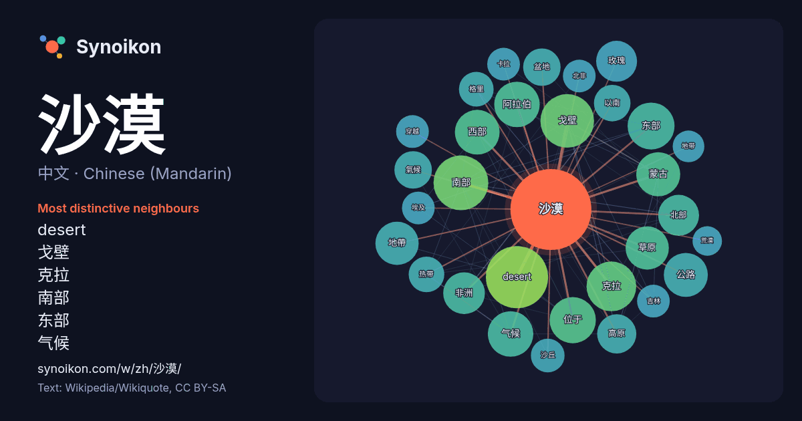

中文 · Chinese (Mandarin) · word of the day list
沙漠
“desert” · The words found around it in 1269 instances from Chinese (Mandarin) Wikipedia, Wikiquote.

Most distinctive neighbours
- desert 56×
- 戈壁 42×
- 克拉 30×
- 南部 29×
- 东部 28×
- 气候 27×
- 阿拉伯 27×
- 草原 25×
- 地帶 25×
- 玫瑰 24×
- 高原 22×
- 西部 21×
- 蒙古 21×
- 非洲 20×
- 盆地 20×
- 公路 19×
- 氣候 19×
- 以南 18×
- 沙丘 17×
- 格里 17×
× = how many times more often than in general Chinese (Mandarin) Wikipedia text.
Most frequent neighbours
- desert 58
- 南部 45
- 戈壁 43
- 克拉 37
- 地區 36
- 面积 34
- 东部 33
- 地区 33
- 中国 32
- 位于 32
- 主要 31
- 气候 31
- 阿拉伯 31
- 西部 30
- 位於 29
- 公路 29
- 蒙古 29
- 地帶 28
- 草原 28
- 非洲 26
In context
- 世界上最大的沙漠 納米比沙漠(Namib) 戈壁 沙漠- 中國和蒙古。 卡拉庫姆大沙漠 塔尔沙漠／科里斯坦沙漠 - 印度和巴基斯坦。 克齊爾庫姆沙漠 - 哈萨克斯坦和乌兹别克斯坦 內蓋夫沙漠 - 以色列南部 约旦沙漠 - 以色列东部和巴勒斯坦 塔克拉玛干沙漠 - 中华人民共和国新疆 腾格里沙漠 - 中华人民共和国内蒙古 Wikipedia snippets · 沙漠
- 沙漠猫（学名：Felis margarita）是种小型猫科动物，生活在非洲和亚洲的沙漠中。在饲养的情况下可生活13年。 成年沙漠猫体长约50厘米，尾长约30厘米，平均体重约2.7公斤；头宽肢短，耳大而尖。体毛呈沙黄色，身上有淡暗色的条纹，有时基本上看不见。在非洲亚种身上最为明显。尾尖的毛是黑色的，脚 Wikipedia snippets · 沙漠猫
- 沙漠、鲁卜哈利沙漠、大沙沙漠和卡拉库姆沙漠之后的第五大沙漠。 塔克拉玛干沙漠平均年降水不超过100毫米，最低只有四五毫米；平均蒸发量高达2500—3400毫米。此地存在的金字塔形沙丘屹立于平原以上300米，狂风能将沙墙吹起，高度可达其3倍。沙漠里沙丘绵延，受风的影响，沙丘时常移动。沙漠 Wikipedia snippets · 塔克拉玛干沙漠
- 沙漠，但並非想像中的黃沙萬里，此沙漠五色(黃、白、黑、綠、紅)具全，並非只有黃沙。地貌上連綿沙丘、流動沙漠並不常見，反而是岩漠、礫漠、泥漠與沙漠混雜。撒哈拉沙漠可以分西撒哈拉、中部的阿哈加尔高原、提贝斯提高原和艾尔高原、以及最为干旱的泰内雷沙漠和利比亚沙漠。其最高点在库西山，位于乍得北部的提贝斯提高原，海拔3 Wikipedia snippets · 撒哈拉沙漠
- 間，由美国领导的35個國家組成的聯軍和伊拉克之間的一場局部戰爭。前期部队集合期间代号沙漠盾牌行动（英語：Operation Desert Shield，1990年8月2日 – 1991年1月17日），战斗阶段代号沙漠風暴行动（英語：Operation Desert Storm，1991年1月17日 – Wikipedia snippets · 海湾战争
- 阿拉善沙漠是戈壁沙漠的最南部份，位於中國內蒙古的北部及甘肅省的北部。沙漠以東為賀蘭山；南接祁連山；西達额济纳河；北至蒙古国，面积約100萬平方公里。 阿拉善沙漠主要為阿拉善盟的聚居地。另一方面，阿拉善龍的化石於阿拉善沙漠內首次被發現，因此以此地命名。 Wikipedia snippets · 阿拉善沙漠
- 泰地区。地处天山山脉中段北麓，准噶尔盆地南缘，东、南、西三面环山，地势南高北低，东部有博格达山，南部有天格尔山，西部有喀拉扎山，北部则是古尔班通古特沙漠。境内有乌鲁木齐河、头屯河、白杨河等河流。截至2019年，全市辖7个区、1个县，总面积14216.3平方公里，其中全市建成区面积达到521 Wikipedia snippets · 乌鲁木齐市
- 沙漠和草原地区，是世界第六大沙漠。在蒙古语中有沙漠、砾石荒漠、干旱的地方等意思。中文古称大碛，又称瀚海沙漠（瀚海又指贝加尔湖）、戈壁滩、戈壁沙漠（今中蒙边界大部）。 与之对应的汉语词汇“戈壁”则用来指代像戈壁本身那样多岩石的半沙漠地带，而非沙质沙漠。 Wikipedia snippets · 戈壁
More Chinese (Mandarin) words
Precomputed on 2026-10-09 with default settings (±5 words, medium corpus). The interactive map can refresh it with live data.